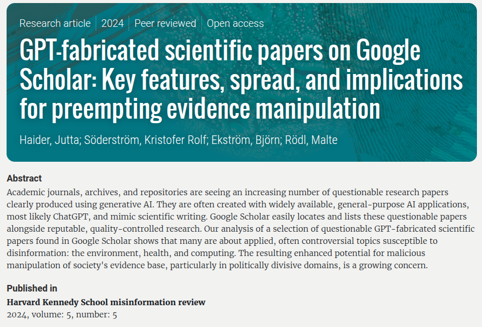

Reproducible Experiments
in Computer Science Research
Martina Baiardi and Raphael Schwinger
Table of Contents
Slide to be removed
- Introduction to reproducible research meaning (Martina)
- Reproducibility starts from development: build tools (gradle x JVM, Poetry x Python) and frameworks (hydra) (Raphael)
- Basics of Containerization: Dockerfile and docker-compose (Martina)
- Hands on a project: RL reproducible experiment setup using Poetry and Hydra (Raphael)
- Cherry on the top: automation. GitHub, OSS proj, CI/CD pipelines, Github Actions, … (Martina)
What is reproducibility?
Reproducibility of experiments is the key to validating scientific claims.
- Validation of Results that were claimed in the scientific publication
- Advancing Knowledge without re-building everything from scratch

How does this affect us as computer scientist?
Let’s make an example
-
I find an interesting paper that fits my research needs.
-
The authors’ methods seem perfect for my work, so I want to dive deeper into their experiment.
-
I look for the companion artifact… What can go wrong?
1) Artifacts not available
The link to the research artifacts (code, data, etc.) is broken.


2) Missing an explanation on how to execute it
- The artifacts are available but in non-standard formats that researchers can be unfamiliar with.
- The file sizes are unexpectedly large.
- No clear instructions on how to use them.
Example: How would you open and execute a
duffy-duck.qcow2file that weights 20GB? Yes, it can be a valid artifact.
3) The artifact is not running
- Strange errors prevent the artifact to execute on my pc
- Runtime dependencies may be missing, but
whichones?
Moreover, let’s don’t forget about
the elephant in the room
As computer scientists we can do better
Reproducibility starts from development:
- Reproducible builds: Adoption of build automation
tools to manage experiment dependencies. - Isolation: Prepare a lightweight containerized environment
for the distribution of the experiment. - Automation: Create an automatic pipeline that tests
the source-code and generates the artifacts,
so you don’t have to do it by hand. - Open-Source Research: protect your ownership
by picking correct license.
Build automation tools
Raphael you can continue here
Containerization
Hands on a real example!
Raphael you can continue here